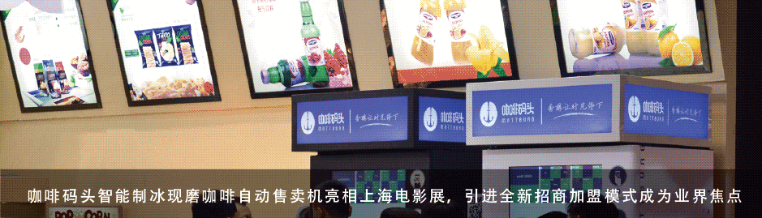
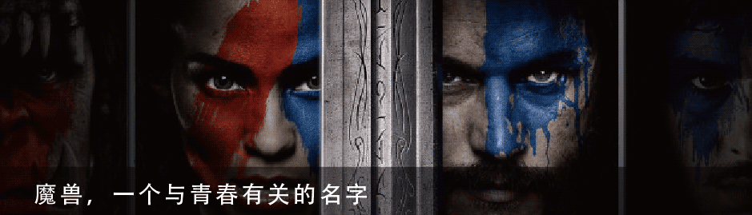
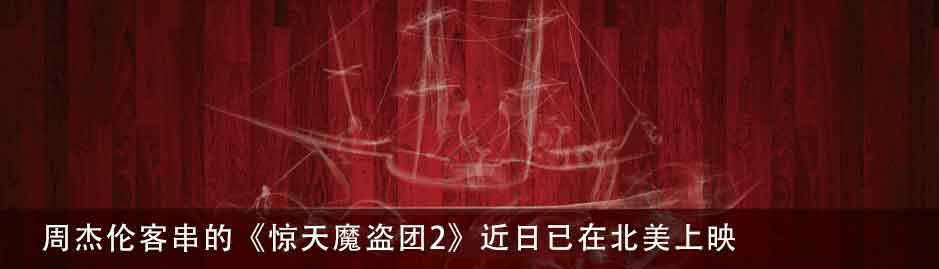
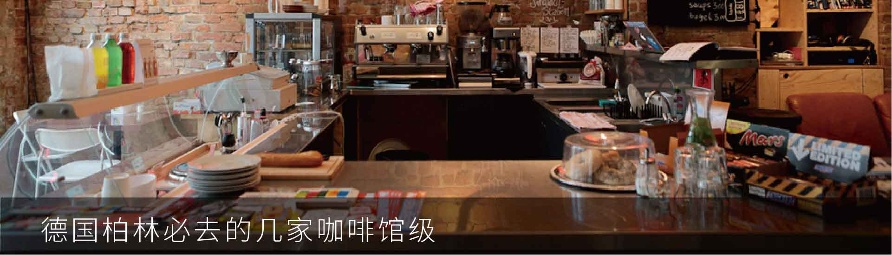
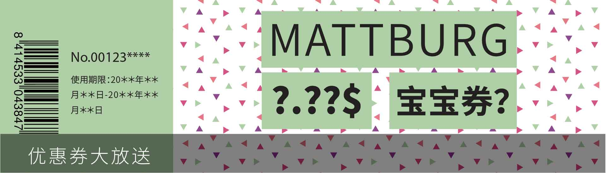

新闻动态
咖啡文化
最新活动
Mattburg咖啡码头天使轮获得700万融资二代机将全面升级
城市在以光速发展， 一杯高品质的现磨咖啡，不仅能提神醒脑，更是高端精英人士身份的彰显。德国品牌Mattburg咖啡码头自2015年进军中国市场后，势如破竹。一方面，致力于传播正宗的欧洲咖啡文化；另一方面，顺应“互联网+”趋势，将领先的德国物联网技术运用在咖啡制作上。6月16日，由咖啡码头自主研发的第二代智能咖啡机亮相第五届上海国际电影论坛暨展览会，在现场颇受好评。此次展会中，咖啡码头作为特邀合作方，引进自主研发的国内首创智能现磨咖啡机，与红星美凯龙影业、中钜铖跨界联盟，三方朝着共同创办新概念多元化娱乐影业而努力。届时，咖啡码头走进全国影院的计划正式启动。
近日，Mattburg咖啡码头天使轮获得700万融资，六町资本领投。
市场前景及竞争优势
目前市场上同类咖啡自动贩卖机品种繁多，竞争激烈，Mattburg咖啡码头的主要优势在于：
1、货源优质：Mattburg咖啡码头坚持引进原产地为南美的100%阿拉比卡咖啡豆，经繁复手工采摘，确保口味醇正。
2、技术优势：咖啡码头的咖啡机一律自主研发，拥有多项发明专利，且经权威机构认证，拥有更高的效率（现磨咖啡45秒左右完成）、更安全的监控(无钥匙管理系统)、更稳定的性能（专利称重系统）和更完善的售后（专业的应急维修人员）。
3、价格优势：咖啡码头所有饮品价格均在12元至15元不等，在价格上占有绝对的优势，以低端咖啡品牌的价格就能买到一杯中高档品质的现磨咖啡。
4、健康安全：Matburg咖啡码头智能咖啡机所有与食品接触部分均为食品级原料，经过专业培训的工作人员每日清洁机器，定期更换机器内咖啡豆等原料。
5、额外收入：随着机器点位的增加，咖啡码头的覆盖率稳中增长，目前已基本覆盖上海各个区域。机身42寸广告屏，可精准投放互动广告，带来丰厚的额外利润。
合作洽谈
针对不同客户类型，采取不同合作模式。无论您手持多少资金，都可以洽谈。目前合作模式主要分为三类：
1、原料购买
2、加盟代理
3、广告位招租
企业文化
咖啡码头，致力于将欧式醇正的现磨咖啡带入中国，从咖啡豆的原料，到咖啡制作工艺，咖啡的购买方式，都渗透着德国式的严谨。单从设计风格上来看，从咖啡机的外观，到咖啡杯、LOGO等大大小小的设计上，咖啡码头都在严格把控每一个细节，力臻完美。咖啡码头，既是坚持现磨咖啡文化的传统匠人，又是互联网时代的新生代后起之秀。随着咖啡码头智能咖啡机的出现，我们看到传统与现代的完美融合，也看到咖啡行业正在进行一场重要变革。科技改变生活，随着物联网的发展，即将开启一个新的万亿级市场。
魔兽，一个与青春有关的名字截至6月12日21时，电影《魔兽》仅在中国内地上映4天，票房便突破10亿元人民币。首映当天，午夜场票房超过5540万元，创下内地影史零点场票房冠军。这款系列游戏风靡全世界22年，拥有超过1亿名全球玩家。2006年，魔兽改编电影计划公布，玩家们整整等了10年，才终于等到上映。
杰伦客串的《惊天魔盗团2》近日已在北美上映，该片赢得很好的口碑。相对《魔兽》在票房和口碑上的强大反差，《惊天魔盗团2》却凭借大量好口碑以及题材的独特性持续吸引着更多影迷的关注。在以大场面、强特效为主要卖点的暑期档好莱坞大片中，其不但具备烧脑情节、反转剧情、悬疑气质，成为这一档期内为数不多兼具娱乐性与艺术性的大片。《惊天魔盗团2》将于6月24日在内地上映。你看是不看？
他叫梵高。他是荷兰后印象主义的先驱，深深地影响了二十世纪艺术。生前贫困潦倒，弟弟提奥是他唯一的知己。三段感情都无疾而终，受精神疾病折磨，最后在37岁那年自杀身亡。
1888年2月，梵高在朋友推荐下来到法国南部小城--阿尔勒（Arles），当他来到这个城市后，很快就爱上了这个城市。猛烈的阳光和刺目的麦田使他 “疯狂”，也使他的创作进入了高峰期。他的很多经典之作，也都在这里创作而成。例如《朗格洛瓦桥》、《夜间的咖啡馆》、《黄房子》等等，包括曾经在画家笔下恣意绽放的普罗旺斯的阳光和鲜艳的色彩，都依旧有迹可寻。
梵高自1888年5月到9月借住的兰卡散尔咖啡馆， 位于法国阿尔勒的形式广场，由于通宵营业， 因而被称之为“夜间的咖啡馆”。在此期间，梵高创作了有两幅关于夜晚咖啡馆的布面油画，一为内景，名为《夜晚的咖啡馆》，现收藏于美国耶鲁大学艺术馆，参观此画需预约；一为外景，名为《夜晚露天咖啡座》，目前收藏于荷兰克勒勒-米勒博物馆。因译名较多且混杂，两者名字上不易区分
住在阿尔的梵高，迷上了画灿烂的星夜。入夜后，他漫步在街头巷尾，支起画架，将蓝色的星空、黑黝黝的房舍阴影，从屋子里流泻出来的温暖灯光，以及闪闪发亮如宝石般的星星，一一入画。不同与《星空》，这幅画中的夜晚并没有给人压抑之感，而是多了几分和谐欢畅。那时梵高的心情应该是自由快乐的，暂时忘却了生命的孤独。
蓝色与黄色向来是梵高的最爱，一个诉说着恬静的心情，一个代表着喧闹的气氛，在这幅画中，即便静谧的蓝色夜晚将至，但由鹅卵石铺成的广场，在黄色调的灯光下，依旧展现着人们的欢乐与活力。本幅画的笔触相当准确，这是梵高细心观察的结果。黄橙的灯光和深蓝的夜空相互对比，视线沿着咖啡棚和座位向后延伸，使画面产生纵深感。梵高曾说这是一张不用黑色的夜景图，他成功的运用色彩表现了夜间户外写生的效果。
梵高的激情，来自他所生活在其中的那个世界，来自他所认识的人们所做的按捺不住的强烈反应。这绝不是一个原始人或小孩子所做的那种简单的反应。他写给弟弟提奥的信，是一个艺术家写出来的最动人的故事。信中表明了他高度敏感的知觉力，这种知觉力完全符合他他那感情的反应。他敏锐地意识到，自己正在获得效果，这种效果是通过黄色或蓝色来取得的。虽然他的大部分色彩观念用来表达对于人物和自然的爱，及其表现过程中的愉快，但他对较深的色彩十分敏感，所以在谈到《夜晚的咖啡馆-室内景》说：“我试图用红色和绿色为手段，来表现人类可怕的激情。
《夜晚的咖啡馆-室内景》是由深绿色的天花板、血红的墙壁和不和谐的绿色家具组成的梦魇。金灿灿的黄色地板呈纵向透视，以难以置信的力量进入到红色背景之中，反过来，红色背景也用均等的力量与之抗衡。这幅画，是透视空间和企图破坏这个空间的逼人色彩之间的永不调和的斗争。结果是一种幽闭、恐怖和压迫感的可怕体验。作品预示了超现实主义用透视作为幻想表现手段的探索，但是没有一种探索，能有如此震撼人心的力量。
在梵高完成此画的100多年后，这家咖啡馆一直是阿尔的人们饮酒的地方， 现在被称做梵高的咖啡馆，仍旧保留着那黄色的雨蓬和所有的东西。在这幅作品中，梵高使用一条纵线、一条横线、两条对角线来切割画面。没影点，即透视线的会聚点位于画面正中央。
如今，梵高画过的桥还在，河水静静地从它下面流过；梵高画过的咖啡馆还在，慕名而来的人坐下来，在画里的咖啡馆，喝一杯法国南部的香浓咖啡。这座咖啡馆仍然完整地保留着100多年前梵高画里的模样，但是墙壁却刻意刷成了土黄色。咖啡馆外的露天座，已经和梵高画里的桌椅不一样了，换成了铁椅子，没有刻意还原原貌。每天下午三四点左右，这里的客人很少。偶尔会有导游带着游客前来参观。坐下来，要一杯咖啡，这些人努力想要追寻些什么，然而，时光不会倒流。只有当天色渐渐暗下去的时候，星光一点点升起来，天空显现出幽幽的蓝，当咖啡馆门前的那盏灯亮起来，人们才会突然感觉到这与梵高所画的《夜晚露天咖啡座》一模一样。
100多年前，贫穷潦倒的画家走在这些街道时，一定没有想到，这间当年普通的咖啡馆100多年后会因梵高而举世闻名。今天，当我们再次坐在这家咖啡馆里时，手里端着一杯热咖啡，似乎总有一种预感，下一个推门进来的就是梵高。
假如一不小心打翻了咖啡，咱们可以这么玩，用咖啡渍来画画。不信你看... ...易红，来自马来西亚的华裔女艺术家，她用一只咖啡杯，沾着咖啡一圈一圈地用咖啡渍“印”出了旁边这硕大一幅的周杰伦画像。有时候我们必须承认女人更适合成为这个世界的造物主，她们甚至可以用叶子和尸块变出美味——易红是女人，她也擅长创造，她能够不用画笔，也不用颜料，而用石头、番茄酱、牛奶、盐巴等丝毫不艺术的东西，画出超级艺术的画作来。她最近的一个作品，就是大家在题图中看到的《周杰伦》，这次，所有被用到的工具仅仅是一杯咖啡！怎么样，是不是看得惊呆了？是不是跃跃欲试？赶快拿起手中的咖啡，为偶像画一幅画吧。
德国柏林必去的几家咖啡馆
1. Westberlin
充满家的味道
咖啡厅Westberlin，在查理检查站（Checkpoint Charlie）附近。在这里你会惊讶地发现，这里充满了家庭的味道，办公室员工享受他们的午休以及游客的好去处。除了一杯咖啡，您还可以享受一些非常不错的零食，如美味的三明治，自制蛋糕或羊角面包。 Westberlin艺术，建筑和时尚，以及一个独立的工作和阅读区的书籍和杂志也提供了一个很好的阅读选择。
地址：弗里德里希大街215号，10969柏林
电话：+49（0）30-25 92 27 45
周一至周五上午08:30 – 下午07:00
周六，周日上午10:00 – 下午07:00
info@westberlin-bar-shop.de
2. 咖啡伴侣
咖啡艺术圣地
咖啡伴侣咖啡厅，是真正的咖啡爱好者和煮咖啡的艺术的圣地。
咖啡伴侣同VOO店坐落在同一个空间，可以在此选择很多精美设计的衣服。
地理位置优越，享受一杯咖啡的同时，还能享受购物的乐趣。 这里不仅有时尚的设计，热情的工作人员，还有美味的咖啡。
地址：Oranienstr， 24，10999柏林
周一至周六上午11:00 – 下午7:00
info@companioncoffee.com
3. 五象
极具咖啡匠人精神
这家咖啡厅显得有点偏僻，坐落在柏林的克罗伊茨贝格一个安静的街区。 这里有好喝的热饮，好吃的蛋糕。
五象有自己的小面包店，他们的自制蛋糕值得尝试。 他们热衷于质量，他们的目标是采集世界上最好的咖啡源。
他们希望客户了解，咖啡豆从生长到变成杯中美味咖啡的旅途，都经过精心栽培、烘焙与研磨。
4. BUCHHOLZBERLIN
柏林最美咖啡馆
德国柏林Mitte 区的BUCHHOLZBERLIN。这栋历史悠久并且怀抱著家族记忆的建筑，因原屋主长居美国而空了十多年，在Katja Buchholz 夫妇的慧眼独具下，再度发出美丽的光芒。
BUCHHOLZBERLIN 躲在一条安静的小街道旁，一踏进这里，就好像进入了截然不同的心境，一切都变得那么清幽、舒适；长期从事建筑设计的背景，让Katja Buchholz 对家具和器物的品味能兼具简单与优雅，又宽又长的大木桌与白色的建筑充分展现自然温柔的美感。
情迷欧洲杯·夏日狂欢季
活动一：为支持的球队投票
告诉我们这届欧洲杯你最支持的球队，本周（6月14日-6月19日）得票数最高的球队，下周咖啡码头机器的画面将围绕它做一期专题。另外，参与投票者在本周内可获得一张随机金额的优惠券（将任意订单编号发送给我们）。
活动二：熬夜看球福利
截止到7月11日，每晚00：00- 01：00
20张全免券限时抢
仅限24小时内使用
我们有“球”必应，冠军“啡”你莫属。
硝烟再起，你主沉浮。
由冰与火之歌改编的美剧《权力的游戏》十分火热
就是更新太慢！！！
没关系，今夏我们为你打造了一款冰火券！！！
本宝宝不开心，本宝宝求抱抱
我还是个宝宝，吓死宝宝了！
小啡为各位宝宝们送福利
宝宝券拿走不谢。
粉丝福利：最新活动→抢券活动
半价限时券
每日中午12：00-13:00
200张 限时抢！！！
5元宝宝券
每日上午10：00-11：00
200张限时抢！！！
3元冰火券
随时可领取
使用期限：2016年6月1日-2016年7月31日
注：本次活动最终解释权归咖啡码头所有。